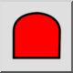
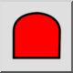
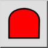
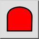

Polilinea area
Barra degli strumenti / Icona:
 

Menù: Info > Polilinea area
Scorciatoia: I, I
Comandi: infopolylinearea | ii
Questa è una traduzione automatica.
Barra degli strumenti / Icona:
 

Menù: Info > Polilinea area
Scorciatoia: I, I
Comandi: infopolylinearea | ii
Questo strumento misura l'area di una polilinea.